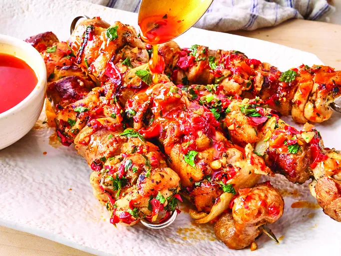

Home
Chicken Scarpariello Skewers

Description
These chicken scarpariello skewers, alternating garlicky chicken, sausage, and onion, are pan-seared, then baked,
and dressed with a garlic, pickled pepper, and parsley butter sauce.
Ingredients
- 1 kg skinless boneless chicken thighs, cut into 2-inch pieces
- 1/4 cup extra virgin olive oil (divided)
- 1 teaspoon salt, plus more to taste
- 1/2 teaspoon freshly ground black pepper
- 4 teaspoons minced garlic
- 1 teaspoon finely chopped fresh rosemary
- 1 pound Italian sausage, cut into 1 1/4-inch pieces
- 1 small onion, cut into 1 1/4-inch pieces
- 1/3 cup jarred peppadew peppers or cherry peppers (finely chopped)
- 1/2 cup white wine
- 1 cup chicken stock
- 4 tablespoons butter
- 1 tablespoon finely chopped Italian parsley
Steps
- Preheat the oven to 190 degrees F. Combine chicken, 3 tablespoons olive oil, salt, pepper, 1 tablespoon
garlic, and rosemary in a bowl; stir until chicken is completely coated.
- Thread chicken, sausage, and onion evenly onto 6 wood or metal skewers alternating the pieces.
- Heat remaining oil in a large skillet over high heat. Add skewers and cook undisturbed until browned, about
4 minutes. Flip skewers and cook for 4 more minutes; transfer skewers onto a sheet pan.
- Bake in the preheated oven until fully cooked, 10 to 12 minutes.
- Meanwhile, return skillet to medium-high heat and add remaining garlic and peppers. Cook, stirring
constantly, until garlic is fragrant, about 30 seconds.
- Deglaze the skillet with white wine while scraping bits from the bottom of the pan and cook until mixture is
reduced by half.
- Add chicken stock and peppadew liquid and bring to a simmer, stirring occasionally. Simmer until reduced by
half, 5 to 7 minutes.
- Turn heat off, add butter, and stir until melted. Stir in parsley and drizzle sauce over chicken skewers.